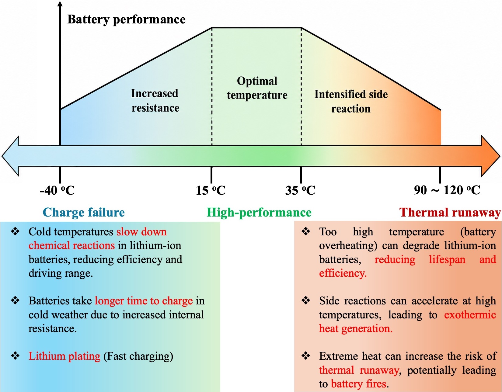
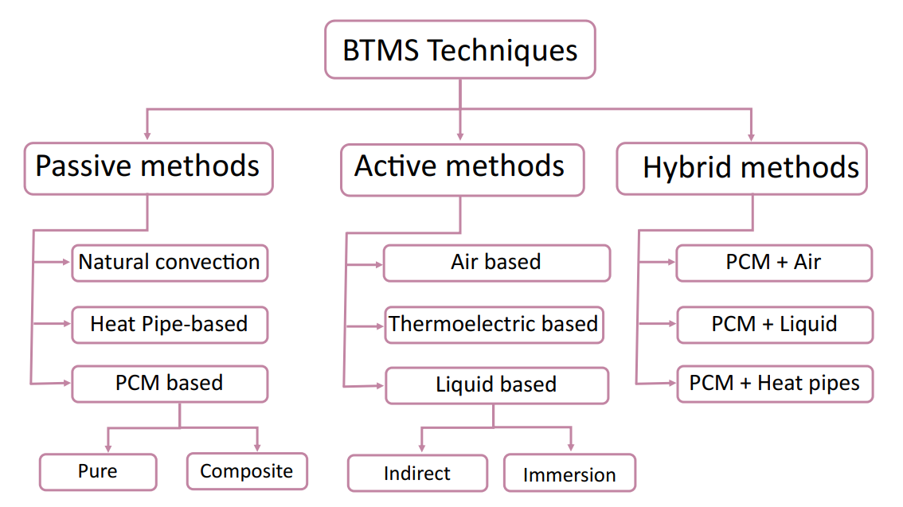
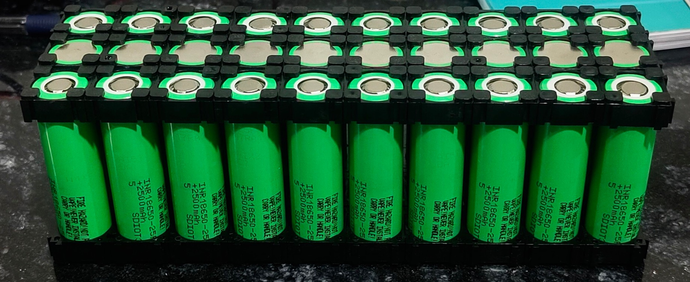
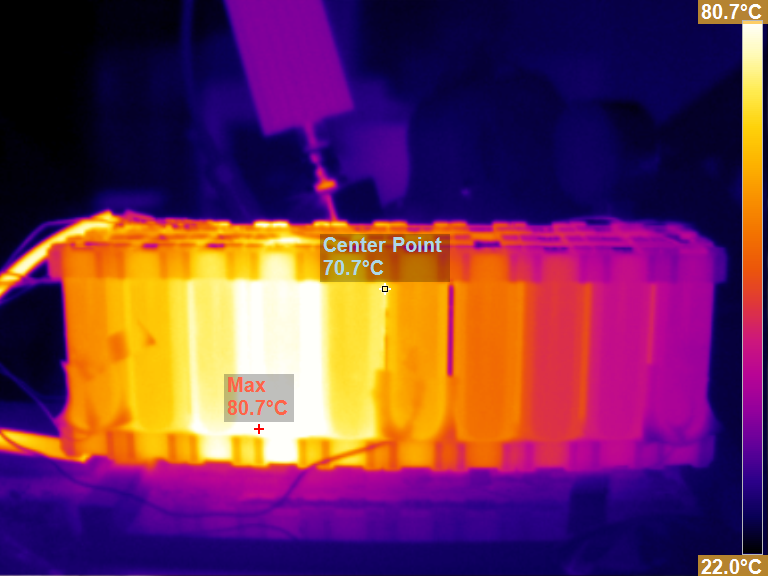
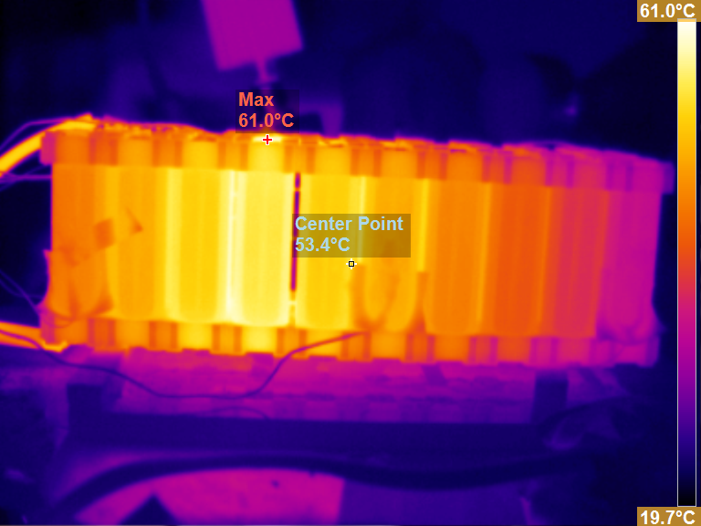
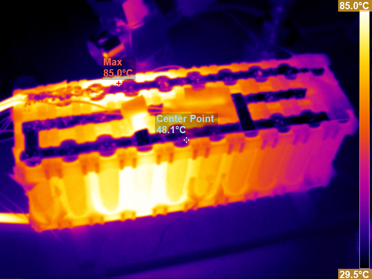
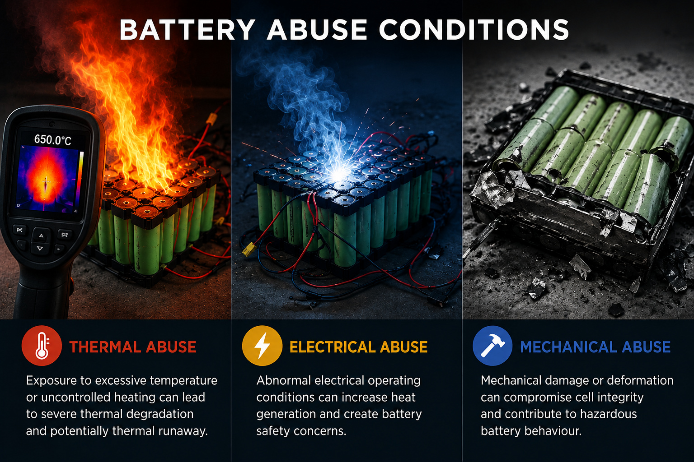

Why Battery Thermal Management is Important
Understanding, measuring and controlling heat generation in lithium-ion batteries for safe and reliable operation.
Lithium-ion batteries generate heat during charging and discharging due to electrochemical and internal resistive processes. The thermal behaviour of a battery strongly influences its safety, performance, efficiency and operational life.
Maintaining the battery within an appropriate temperature range is therefore an important requirement for reliable battery operation. Excessively low temperatures can increase internal resistance and adversely affect battery performance, while elevated temperatures can accelerate degradation and undesirable side reactions.
Battery Thermal Management Systems (BTMS) are developed to control the thermal environment of battery cells and modules and to maintain suitable operating temperatures during different operating conditions.
Battery Operating Temperature and Performance

Temperature strongly influences battery behaviour
Battery performance is strongly dependent on operating temperature. At low temperatures, electrochemical reactions become slower and internal resistance increases, which can reduce battery performance and charging capability.
At elevated temperatures, unwanted side reactions and degradation mechanisms can become more significant. Excessive heating can further increase the risk of thermal instability and, under severe conditions, thermal runaway.
Low Temperature
Increased resistance and slower electrochemical reactions.
Optimal Region
Favourable operating conditions for battery performance.
High Temperature
Accelerated degradation and increased thermal safety concerns.
Classification of Battery Thermal Management Systems
Thermal management approaches can broadly be classified into passive, active and hybrid techniques.

Classification of battery thermal management techniques.
Passive Methods
Passive thermal management approaches regulate battery temperature without requiring continuous external energy input for active cooling.
- Natural convection
- Heat-pipe-based systems
- Phase Change Material (PCM)
Active Methods
Active systems employ an external mechanism to enhance heat transfer from the battery.
- Air-based cooling
- Liquid-based cooling
- Thermoelectric cooling
Hybrid Methods
Hybrid systems combine two or more thermal management mechanisms to improve heat transfer and temperature control.
- PCM + Air
- PCM + Liquid
- PCM + Heat Pipes
Development of a Passive BTMS for an NMC Battery Module
Experimental characterization followed by passive thermal management design using a natural circulation loop.

3S10P NMC Battery Module
The thermal management system is being developed for a 3S10P NMC lithium-ion battery module with a specified voltage of 12.6 V and capacity of 25 Ah.
The research follows an experimental-to-design approach in which the heat generation characteristics of the battery module are first experimentally characterized. The measured thermal behaviour is then used as a basis for developing an appropriate passive thermal management strategy.
Experimental Measurement of Battery Heat Generation
Heat Generation Characterization
Before designing the thermal management system, the heat generation characteristics of the battery are experimentally measured.
An isothermal battery calorimeter is used to directly characterize the heat released or absorbed by the battery under controlled operating conditions.
Why measure heat generation first?
The experimentally measured thermal behaviour provides an important basis for understanding the thermal load that the BTMS needs to accommodate during battery operation.
Infrared Thermography
Thermal imaging during 1C discharge of the 3S10P NMC battery module to visualize surface temperature distribution and localized thermal variations.

Thermal Distribution During Discharge
Infrared thermography reveals the surface temperature distribution of the battery module during controlled 1C discharge.

02Module Temperature Distribution
Infrared view of the battery module showing spatial temperature variation.

03Top-View Thermal Distribution
Top-view infrared image highlighting localized thermal regions within the module.
The thermal images provide a visual representation of the surface temperature distribution and help identify localized thermal variations within the battery module. Such measurements are useful for understanding thermal behaviour and guiding the development of effective battery thermal management strategies.
PCM–NCL Passive Battery Thermal Management System
A passive thermal management approach based on phase change material and natural circulation.

Passive Cooling Without Additional Power
Based on the experimentally characterized heat generation of the battery module, a passive Battery Thermal Management System is being developed using a Phase Change Material (PCM) combined with a Natural Circulation Loop (NCL).
The objective is to manage the battery thermal load through passive heat-transfer mechanisms while avoiding the additional energy requirement associated with continuously operated active cooling components.
Phase Change Material
Provides thermal energy storage through phase change.
Natural Circulation Loop
Enables passive circulation for heat transport without a dedicated pump.
Reduced Auxiliary Energy
Designed to reduce the additional energy burden associated with active cooling.
Ongoing Research
The PCM–NCL thermal management system is currently under development. Detailed experimental results, thermal performance evaluation and comparative analysis will be added as the project progresses.
Thermal Safety and Abuse Conditions
Battery safety can be influenced by thermal, electrical and mechanical abuse conditions.

Thermal Abuse
Exposure to excessive temperature or uncontrolled heating can lead to severe thermal degradation and potentially thermal runaway.
Electrical Abuse
Abnormal electrical operating conditions can increase heat generation and create battery safety concerns.
Mechanical Abuse
Mechanical damage or deformation can compromise cell integrity and contribute to hazardous battery behaviour.
Experimental Characterization → BTMS Design
The current work focuses on experimentally characterizing battery heat generation and using the resulting thermal information to guide the development of a passive PCM–NCL Battery Thermal Management System for the 3S10P NMC battery module.
Additional design details, experimental results and performance analysis will be added as the ongoing research progresses.